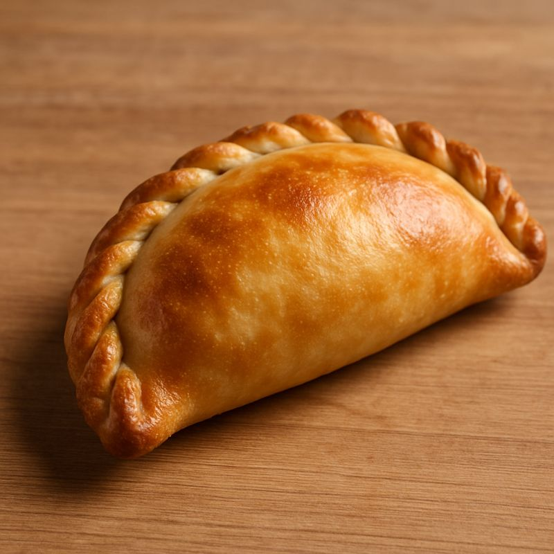

Empanadas

This empanada recipe was given to me by a visiting Argentine professor while I was studying Spanish in college. They have become a staple food in my household; they are simple to make and delicious.
Ingredients
- 1 tablespoon extra-virgin olive oil
- 1 pound yellow onions, chopped
- 6 scallions, chopped
- 1 green bell pepper, chopped
- 2 pounds ground beef
- 2 tablespoons dried oregano
- 1 ½ tablespoons salt
- 1 tablespoon cayenne pepper
- 1 ½ teaspoons ground cumin
- 1 tablespoon butter, or as needed
- 36 empanada pastry discs
- 1 egg white, beaten
Steps
- Heat oil in a large Dutch oven over medium heat. Add onions, scallions, and bell pepper. Cover and cook, stirring occasionally, until onions are translucent, 10 to 15 minutes.
- Add ground beef, oregano, salt, cayenne pepper, and cumin to the pot. Cook and stir beef until no longer pink, 8 to 10 minutes. Remove from the heat and allow to cool slightly, then cover and place in the refrigerator until meat is completely cooled, about 1 hour.
- Remove filling from the refrigerator and transfer to a colander to drain. Return filling to the Dutch oven.
- Preheat the oven to 400 degrees F (200 degrees C). Liberally grease a baking sheet with butter.
- Place about 2 tablespoons filling into the center of empanada disk. Fold empanada in half into a crescent shape, press the edges of dough together with a fork or your fingers to seal, and place onto the prepared baking sheet. Repeat with remaining empanadas and filling. Brush tops with egg white.
- Bake in the preheated oven until golden brown, about 20 minutes.
Home